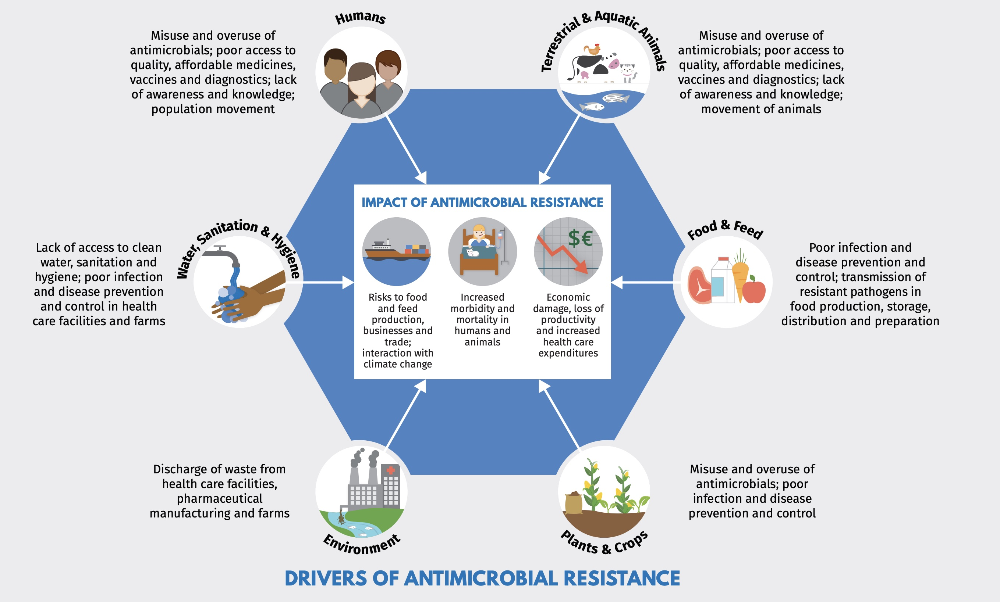

97039 - GLOBAL HEALTH, ANTIMICROBIAL DRUGS AND VACCINES
Global Aspects of Antimicrobial Resistance
11/26/2022
A brief history of antimicrobial resistance (AMR)
Until the 20th Century, influenza and pneumonia, tuberculosis, and enteric infections were among the top thee causes of death. The average life expectancy of adults in Western Europe was less than 50 years (Fig 1), and 2% of children failed to live beyond 5 years of age due to deaths caused by infectious diseases.
Industrialization and growing wealth during the 19th century brought improvements in drinking water and sanitation in many countries, reducing communicable enteric infections and improvements in life expectancy. By the early 20th century, advances in immunization led to the introduction of vaccines for pertussis, diptheria, yellow fever and tuberculosis. However, common bacterial infections remained a common cause of death. Streptococcal throat infections were sometimes fatal, ear infections could lead to deafness, mastoiditis or meningitis with a 90% mortality rate, and surgery or childbirth was associated with high complication rates and frequent maternal deaths.
Figure 1. Changes in life expectancy over 500 years. Data source: World Health Bank
Products with antimicrobial activity had been used for millennia to treat infections even if the causes of infection were not known until the 19th and 20th centuries. The microbiologist and immunologist Paul Erlich (1854-1915) is credited with the discovery and first medical application of a synthetic antibiotic arsphenamine (Salvarsan) in the treatment of bacterial infection- syphilis. However, it was the serendipitous discovery of penicillin on September 3, 1928 by Alexander Fleming, and its subsequent purification of the drug in quantities needed for clinical testing in humans by Drs. Florey and Chain in the late 1930s, that lead to the major breakthrough of antibiotic treatment for common bacterial infections. Alexander Fleming was also among the first physicians to caution about the risks of resistance to penicillin if used too little or for a too short of period during treatment.
“It is not difficult to make microbes resistant to penicillin in the laboratory by exposing them to concentrations not sufficient to kill them, and the same thing has occasionally happened in the body. The time may come when penicillin can be bought by anyone in the shops. Then there is the danger that the ignorant man may easily under-dose himself and by exposing his microbes to non-lethal quantities of the drug make them resistant.” -Sir Alexander Fleming, Nobel Prize Lecture, December 11, 1945
By 1947, Fleming’s predictions were realized as the first cases of penicillin resistance reported. Thus began the “arms race” between the “emergence” and spread of new antimicrobial resistance mechanisms and discovery of new antibiotics to treat these resistant pathogens. Initially, antibiotic discovery seemed to keep pace with resistance as a host of new chemical classes were developed and introduced in the 1950s-1980’s. During this time, it was often possible to simply switch treatment once resistance against a specific antibiotic became a major problem. By the 1980’s the discovery of new agents began to slow (Fig 2). The latest discovery of a new antibiotic class that has reached the market was in 1987. Since then, there has been a lack of innovation in the field, and today there are few novel antibiotic classes in the drug pipeline. In Module 2 we will examine the scientific challenges and market forces that have made new antibiotic discovery increasingly difficult and how access to newer antibiotics is limited in many parts of the world.
Once resistance has developed, it can spread from a colonised patient to another patient if appropriate hygienic precautions (e.g., hand hygiene, isolation) are not taken. The risk of resistant bacteria spreading is amplified in crowded environments, especially when people in the surrounding area are receiving antibiotics - a common situation in hospitals and other healthcare facilities.
The consequences of faltering antibiotic discovery are now seen worldwide as more and more bacterial infections are becoming harder to treat again. Especially worrisome is the lack of antibiotics against Gram-negative bacteria. The rapid global spread of multi- and pan-resistant bacteria, also known in the lay press as “superbugs,” can cause infections that are not treatable with existing antibiotics.

Figure 2. Antibiotic discovery timeline. Source ReACT Group 2015.
Recognizing the growing global threat of antibiotic resistance (AMR) on human health but also the economy and human development, The World Health Organization (WHO) and World Organisation for Animal Health (OIE) proposed as a Global Action Plan for AMR in 2017 and more recently a “Call to Action on Antimicrobial Resistance” in 2021. The plan outlines 21 strategies and 5 strategic objectives action plans that should be implemented in member states to address AMR. These include:
- Improvements in the awareness and understanding of antimicrobial resistance through effective communication, education and training
- Strengthening of knowledge and evidence base of AMR through surveillance and research
- Reductions in the incidence of infection through effective sanitation, hygiene and infection prevention measures
- Optimization the use of antimicrobial medicines in human and animal health
- Development of an economic case for sustainable investment in AMR research that takes account of the needs of all countries, and increase investment in new medicines, diagnostic tools, vaccines and other interventions
The WHO also published a Priority Pathogen List for research and development of new antibiotics (Table 1). This priority list includes bacterial pathogens that are considered to be be the biggest threat to human health in addition to Mycobacterium tuberculosis. The WHO list breaks down pathogens into three groups:
Table 1. WHO priority pathogens
| Priority | Pathogens included |
|---|---|
| Critical | Acinetobacter baumannii (Carbapenem-resistant) Pseudomonas aeruginosa (Carbapenem-resistant) Enterbacterales (3rd generation cephalosporin, carbapenem-resistant) |
| High | Enterococcus faecium, vancomycin-resistant Staphylococcus aureus, methicillin-resistant, vancomycin intermediate and resistant Helicobacter pylori, clarithromycin-resistant Campylobacter, fluoroquinolone-resistant Salmonella spp., fluoroquinolone-resistant Neisseria gonorrhoeae, 3rd generation cephalosporin-resistant, fluoroquinolone-resistant |
| Medium | Streptococcus pneumoniae, penicillin-non-susceptible Haemophilus influenzae, ampicillin-resistant Shigella spp., fluoroquinolone-resistant |
These pathogens may exhibit multi-drug resistance (MDR),1 extensive drug resistance (XDR) or pan-drug resistance (PDR)(1). Difficult-to-treat resistance (DTR) is a newer definition used to define isolate resistance patterns that require the use of less-effective or more toxic “reserve” antibiotics- e.g., Acinetobacter baumanii susceptible only to colistin and tobramycin (2).
Currently, both the WHO and OIE have also developed lists of antibiotics that are considered of “critical importance” for human and animal medicine. These lists help establish priorities for antimicrobial resistance surveillance and new drug development.
What are the drivers of antimicrobial resistance?
AMR is a natural phenomenon. Most antimicrobial drugs are naturally produced by micro-organisms, including environmental fungi and saprophytic bacteria, or are synthetic modifications of these natural products, with only a few drugs (e.g., sulphonamides and fluoroquinolones) being wholly synthetic. Yet AMR selection is accelerated by antimicrobial exposure in health care, agriculture, and the environment. Further transmission is affected by standards of infection control in healthcare settings, sanitation, access to clean water, access to assured quality antimicrobials and diagnostics, travel, and migration (Fig 3).
Antimicrobials are among the most commonly prescribed drugs used in human medicine, yet up to 50% of all antimicrobials prescribed to people are considered unnecessary. This use, misuse, or overuse of antimicrobial drugs is considered to be a major driving force towards antimicrobial resistance.
In human beings, the concentration of antibiotic prescribing might be highest in inpatient settings, with 30–40% of patients on antibiotics in European hospitals. However, the overall highest quantity of antimicrobial prescribing is highest in the community setting.
More antimicrobials are used in food production than in human beings, with marked national differences in the number of antimicrobial drugs used in food producing animals. Various studies have shown that antimicrobial resistance has, at least in part, emerged as a result of the selective pressure exerted by antimicrobial use outside of human medicine, namely in veterinary medicine, food-animal and fish production, and agriculture

Figure 3. Modifiable risk factors that drive antimicrobial resistance. Figure from reference (3)
How can antimicrobials be used to preserve their effectiveness and delay resistance in humans?
Strategies for the prevention and containment of AMR frequently focus on:
- Improvement of infection diagnosis and prescription practices (antimicrobial stewardship)
- Reduction of antimicrobial use in agriculture and environmental exposure in general
- Development of new antimicrobials
- Access to essential medicines of assured quality
- Improvement of AMR surveillance
Antimicrobial stewardship is a coordinated program that promotes and focuses on the appropriate use of antimicrobials (including antibiotics), improves patient outcomes, reduces microbial resistance, and decreases the spread of infections caused by multidrug-resistant organisms. These programs may be implemented through the use of institution-specific treatment guidelines and an antibiotic stewardship team (typically infectious diseases physicians with a clinical pharmacist) who carry out full-time activities to promote and encourage appropriate antibiotic use. While these programs have been shown to be successful, many gaps remain in the knowledge of how to optimally design and sustain stewardship programs in the hospital, and such programs are rarely implemented outside of the hospital where most antibiotic prescribing takes place.


Figure 4. Examples of antimicrobial stewardship efforts and outcomes. Source: ECDC
AMR situation in Italy
Southern Europe, including Italy, has among the highest rates of resistance for pathogens included on the WHO Priority Pathogen list. For example, surveillance data from the European Centres for Disease Control (ECDC) have reported a dramatic increase in multidrug-resistance (MDR) in Italy since 2009, with now more than one-third of Klebsiella pneumoniae resistant to previously-considered last-line antibiotics such as carbapenems (Fig 1.4). The link to interactive ECDC resistance atlas can be found here. Similarly, the Italian Micronet Resistance Surveillance) program has reported:
- 26.4% of Escherichia coli are resistant to 3rd generation cephalosporins
- 29.5% of Klebsiella pneumoniae are resistant to carbapenems (including 33.1% resistant to multiple drug classes)
- 15.9% of Pseudomonas aeruginosa are resistant to carbapenems
- 80.8% of Acinetobacter spp. are resistant to carbapenems with 78.8% of species resistant to multiple drug classes
- For the Gram-positive organism Staphylococcus aureus, the percentage of methicillin-resistant isolates (MRSA) remained stable, around 34%, while a worrying trend continues to increase in the percentage of Enterococcus faecium isolates resistant to vancomycin, which in 2020 was equal at 23.6%
- For Streptococcus pneumoniae there was a slight increase in both the percentage of isolates resistant to penicillin (13.6%) and those resistant to erythromycin (24.5%).
- Overall, higher antimicrobial resistance rates (around 40%) are observed in ICUs versus general medical wards for both carbapenem-resistant K. pneumoniae and methicillin-resistant S. aureus.

Figure 4. Regional differences in carbapenem-resistant Enterobacterales (CRE) bloodstream infection- 2020 incidence per 100,000 residents in Italy. Source Micronet Resistance Surveillance Program
In 2017, a report by the the ECDC noted that the AMR situation in Italian hospitals and regions poses a major public health threat to the country. The levels of carbapenem-resistant Enterobacteriaceae (Enterobacterales) (CRE) and Acinetobacter baumannii have now reached hyper-endemic levels in many hospitals. Together with increasing methicillin-resistance among the Gram-positive species Staphylococcus aureus (MRSA), these resistance trends has led to Italy’s ranking as one of the Member States with one of the highest level of antibiotic resistance in Europe. Factors noted by the ECDC that contributed negatively to the poor control of antibiotic resistance in Italy include:
- Little sense of urgency about the current AMR situation from most stakeholders and a tendency by many stakeholders to avoid taking charge of the problem
- Lack of institutional support at national, regional and local level
- Lack of professional leadership at each level
- Lack of accountability at each level
- Lack of coordination of the activities between and within levels.
The future of AMR
- Drug-resistant diseases already cause at least 700,000 deaths globally a year, including 230,000 deaths from multidrug-resistant tuberculosis. The estimated total number of deaths due to AMR could climb to 10 million deaths globally per year by 2050 under current projections (Fig 1.4).
- Increasing resistance could lead to an unthinkable future of untreatable infections, reversing more than a 100 years of medical progress. Routine medical procedures or surgery will become more dangerous and associated with higher complication rates. Immunosuppression, cancer chemotherapy and transplantations may carry unacceptable risk for many patients if infections cannot be effectively prevented and treated.
- Economic and social progress in many countries will be dramatically impacted by increasing AMR leading to political and social instability. The initial short-term economic damage of uncontrolled antimicrobial resistance will be comparable to the shocks experienced during the 2008-2009 global financial crisis and result in dramatically-increased healthcare expenditures; reductions in food and feed production, reduced economic output, and increased poverty and inequality. The economic impact of antimicrobial resistance is predicted to be even greater and longer lasting on low-and middle-income (LMIC) countries.

Figure 5. Projected deaths due to antimicrobial resistance in 2050. Source: O’Neil Report (4).
One-Health Perspective of AMR
Because the drivers of antimicrobial resistance lie in humans, animals, plants, food and the environment, a sustained One Health response is essential to engage and unite everyone around a shared vision and goals. “One Health” refers to designing and implementing programmes, policies, legislation and research in a way that enables multiple sectors engaged in human, terrestrial and aquatic animal and plant health, food and feed production and the environment to communicate and work together to achieve better public health outcomes (Fig 1.6).

Figure 6. Rationale for one-health model for addressing AMR: Source: WHO
Antibiotic use in food production
- 75% if human infectious diseases that have emerged or re-emerged in recent decades are zoonotic-i.e. they originated in animals (5).
- Few antimicrobial classes are reserved exclusively for humans. The vast majority of antibiotics are used both in humans and animals, including domestic mammals, birds, farmed fish and shellfish, honeybees and others.
- In horticulture, tetracyclines, streptomycin, and other antimicrobials are used for the prophylaxis and treatment of bacterial infections (e.g., fire blight Erwinea amylovora)
- In veterinary medicine, there are major differences in the way antibiotics are used for companion animals (e.g., dogs, cats, pet birds, horses) versus food-producing animals. Antibiotic use in companion animals is broadly similar to humans to treat clinical infections or in select cases prophylaxis, such as post-surgery. In the case of food animals, if some animals are infected antibiotics may be administered through feed or water to the entire group for reasons of practicality or efficiency. Metaphylaxis is a term used to describe therapeutic/prophylaxis antibiotic treatment at a group level.
- The most controversial type of group treatment in food animals is long-term, low-dose mass antibiotic treatment for purposes of growth promotion. This practice has a high propensity to select for antimicrobial resistance and is driven by economic factors rather than treatment of clinical infection. The practice was banned by the EU in 2006 but still continues in some countries such as the United States and China.
- The reported benefits of using antibiotics for growth promotion is controversial ranges widely in the literature (1-10%). Concerns have been expressed that antimicrobial growth promoters are often used to compensate for poor hygiene/housing and healthy management(6).
- Historically, governmental regulations have focused on toxicological dose-response data and the presence of antimicrobial residues in animal tissue, milk or other edible products (i.e. eggs) from treated animals - so called minimum residue levels (MRLs) compatible with acceptable risk in humans. While MRLs are well-understood and enforced withtesting programs and penalties, these programs do not take into account selection of antimicrobial-resistant pathogens.
- The WHO has advocated for the termination of using antimicrobials for growth promotion. A recent report from the ECDC has suggested some progress in addressing this problem. Using surveillance data from 2017, the EU/EEA population mean antibiotic consumption in the 29 countries was 130 mg per kg of estimated biomass in humans and 108.3 mg per kg in food-producing animals (Fig 1.6). This first time since the agencies began publishing the joint reports in 2011 that antibiotic use in humans has exceeded use in livestock. Consumption of third- and fourth-generation cephalosporins, fluoroquinolones, and aminopenicillins was considerably higher in human medicine, while consumption of macrolides was similar, and consumption of tetracyclines and polymyxins—a last-resort class of antibiotics that includes colistin—was significantly higher in food-producing animals.
- In 2022, new EU legislation will prohibit all forms of routine antibiotic use in farming, including preventative group treatments and medicated feeding except in extraordinary circumstances.
Figure 7. Antibiotic use in livestock reported in 2010
Impacts Animal antibiotic use on Human AMR
Case study-cephalosporins
Third generation cephalosporins (ceftotaxime, ceftriaxone) are widely used for serious infections in humans, including the treatment of urinary tract, abdominal, lung and bloodstream infections. These antibiotics are classified as “critically-important” for human health (WHO AGISAR). Cetiofur, cefpodoxime, and cefoperazone are similar cephalosporins approved veterinary antibiotics and used predominantly for treating bacterial infections in food-producing animals including chickens and cattle.
Resistance to 3rd generation cephalosporins is mediated by extended-spectrum beta-lactamases (ESBLs) and AmpC enzymes. ESBL genes are highly mobile and transmitted on plasmids, transposons and other genetic elements that can spread horizontally (to surrounding bacteria and different bacterial species) and vertically (to daughter cells through replication). Consequently, resistance can spread rapidly from patient-to-patient and among different bacterial species. In recent years, growing resistance to 3rd generation cephalosporins is common among Escherichia coli and Klebsiella pneumonia has required greater reliance on the few remaining classes of antimicrobials such as carbapenems.
A number of studies comparing isolates from animals, food and human infections have found a high genetic similarity or clonal isolates that carry the same ESBL genes and plasmids colonizing animals used for food production and isolates causing clinical infections in patients (7).
Ceftiofur is frequently injected in small quantities to hatching eggs or chicks as metaphylaxis for Escherichia coli infections and/or yolk sac infections (6) (Fig1.7). This practice has been shown to select for cephalosporin resistance in Salmonella enterica serovar Heidelberg- an important cause of human illness in many countries that is typically associated with consumption of contaminated poultry products (8).

Figure 8. Chicken farm in the United States of America.
Studies conducted by the Canadian Integrated Program for Antimicrobial Resistance Surveillance detected a high degree of temporal correlation in trends of resistance to ceftiofur and ceftriaxone (a drug of choice for the treatment of severe cases of salmonellosis in children and pregnant women) among Salmonella Heidelberg from clinical infections in humans, from poultry samples collected at retail stores, and in E. coli from poultry samples collected at retail stores(9). Voluntary termination of ceftiofur metaphylaxis in hatcheries in the province of Quebec was followed by a precipitous drop in the prevalence of resistance to ceftiofur; subsequent reintroduction of ceftiofur in a more limited way was followed by a return to higher levels of resistance (Fig 1.9)

Figure 9. Ceftiofur resistance in chicken and human Salmonella Heidelberg and chicken E. coli.
In Japan, voluntary withdrawal of the off-label use of ceftiofur in hatcheries in 2012 was also associated with significant decrease in broad-spectrum cephalosporin resistance in E. coli from chickens prepared for cooking. Some other countries (e.g., Denmark) have placed voluntary restrictions on its use. The label claim for day-old injection of poultry flocks was withdrawn in Europe, while some countries have banned off-label use of third-generation cephalosporins, and in other countries there is a requirement that use be restricted to situations where no other effective approved drugs are available for treatment.
These examples illustrate the danger of using antibiotics from the same class as critical therapies used to treat human infections for metaphylaxis or treatment in large numbers of animals. A similar pattern in poultry was also observed with mass medication of poultry flocks using fluoroquinolones antibiotics and selection of fluoroquinolone- resistant Campylobacter jejuni infections in humans (10).
Case study- colistin
Colistin is a member of the polymixin class of antibiotics, which have been used in both human and veterinary medicine for over 50 years. Until relatively recently, polymixins were rarely prescribed beyond topical or inhalational therapy in rare cases because of dose-limiting neurotoxicity and nephrotoxicity of the drugs.
However, use of intravenous colistin has surged in the last decade with the increase in carbapenem-resistant Pseudomonas aeruginosa, Acinetobacter baumannii and Klebsiella pneumoniae. Even as human use has increased, colistin continues to be used in Brazil, Europe and China a a growth promoting and antibiotic treatment for pigs, poultry and calves.
In 2014, colistin use in EU member states in animals was higher than humans with a reported 485 tonnes- 99.7% in oral form or oral medicated feed (11). In China, with the world’s largest production of pigs and poultry, an estimated 12,000 tonnes of colistin was used in the food production industry (12).
In 2015, Lui and colleagues reported plasmid-mediated colistin-resistance gene, mcr-1, in Escherichia coli isolates obtained from animals, food and human bloodstream infections in China (12). Alarmingly, the resistance gene has also been detected in 5% of healthy travellers from China in other parts of the world (13).
The mcr-1 gene has also been detected in isolates obtained from wildlife and surface water samples, demonstrating environmental contamination(14)
Additional plasmid-mediated colistin-resistance genes have been reported in many other bacterial species and countries, including mcr-2 from pigs in Belgium, and mcr-3,4,5 in other coutries(15)
Colistin illustrates important One-Health Dimensions of AMR that differ from third generation cephaloporins. Specifically, large volumes of colistin use in animals, rather than humans, have probably have driven colistin resistance now observed in humans. Using large quantities of colistin for group treatment or growth promotion in animals has probably lead to antimicrobial resistance problems in human health, even through colistin was considered in the past to be less important because other less toxic treatments were still available.
For further study: In the 1990s avoparcin, a glycopeptide antimicrobial, was widely used in growth promotion in pigs and poultry production that was not initially thought to be of public health importance. Surveillance and research were eventually able to show that avoparcin use in animals contributed to the selection and wide dissemination of what type of resistance?
Environmental concerns
One health considers possible environmental drivers of AMR in additional to human and animal health (6). Many resistance mechanisms such as beta-lactamases are millions of years old and pre-date antibiotics. Soil and other environmental sources are rich sources of highly-diverse populations of bacteria and genes.
Antimicrobial resistance to a wide variety of drugs has been demonstrated in environmental bacteria isolated from the pre-antibiotic era, as well as from various sites (e.g., caves) free of other sources of exposure to modern antimicrobials. Yet their is abundant evidence that human has an impact on the resistome- the totality of or resistance genes in the total environment (16).
Hundreds of thousands of tonnes of antimicrobials are produced annually and find their way into the environment. Waste from treatment plants and the pharmaceutical industry especially if inadequately treated, has been show to release high concentrations of antimicrobials into surface water. Residues and metabolites of antimicrobials are constituents of human sewage, livestock manure, and aquaculture, along with fecal bacteria and resistance genes. Sewage treatment and composting of manure reduce concentrations of some but not all antimicrobials and micro-organisms, which are introduced to soil upon land application of human and animal bio-solids (17).
In developed countries with good-quality sewage and drinking water treatment, and where most people have little to no direct contact with food-producing animals, transmission of bacteria and resistance genes from agricultural sources is largely foodborne, either from direct contamination of meat and poultry during slaughter and processing, or indirectly from fruit and vegetables contaminated by manure or irrigation water. In countries with poor sewage and water treatment, drinking water is likely to be very important in the transmission of resistant bacteria and/or genes from animals. Poor sanitation also facilitates indirect person-person water-borne transmission of enteric bacteria among residents as well as international travellers who return home colonized with resistant bacteria acquired locally. Through these and other means, including globalized trade in animals and food and long-distance migratory patterns of wildlife, antimicrobial-resistant bacteria are globally disseminated.
General measures to address antimicrobial resistance in the wider environment include improved controls on pollution from industrial, residential, and agricultural sources. Improved research as well as environmental monitoring and risk assessment are also required to better understand the role of the environment in the selection and spread of antimicrobial resistance and to identify more specific measures to address resistance in this sector (Fig 1.9).

Figure 10. Hotspots of antimicrobial resistance
AMR in Low-Middle Income Countries (LMICs)
COVID-19 has focused global attention on the inequitable access to the tools needed to control the pandemic, with high-income countries (HICs) and low- and middle-income countries (LMICs) at opposite ends of the scale. In the case of antibiotic resistance, a pandemic projected to cause four times more deaths per year than occurred from COVID-19 during 2020, inequity between HICs and LMICs is a major challenge(18):
- Lack of access to antibiotics in some poorer countries, a driver of mortality particularly in children under 5 years of age;
- Lack of access to newer, expensive antibiotics needed to treat the increasing toll of MDR and XDR bacterial infections;
- Inequity in ability to provide the basic public health interventions that drive many of the social determinants of infectious diseases in LMICs
The singular effectiveness of access to clean water, sanitation and hygiene, called WASH, in preventing the spread of disease is well understood, yet billions of people around the world still lack access to these necessities (19).
- Currently, 2.1 billion people live without access to safe drinking water and 4.5 billion people are without access to adequate sanitation.
- Every day, 1300 children under 5 die from preventable diarrhoeal diseases, including cholera, caused by contaminated water and poor sanitation.
- 1 in 3 healthcare facilities lacks soap and water or hand sanitizer where staff provide patient care. Billions of patients worldwide must rely on these facilities.
- In some countries, up to 90% of women receive routine prophylactic antibiotics during childbirth, highlighting the conditions under which they are delivering their babies and what would cause the inevitability of infection
The cumulative lack of WASH adds up to children and adults not only getting unnecessarily sick—with the associated suffering, medical costs and loss of income or schooling—they are relying on antibiotics to get better (20). The challenge here is that WASH is a public works solution for a public health problem. WASH is not a pill or ‘quick fix’. It requires capital investment, system strengthening, and behaviour change to ensure that clean water and functional toilets are available and utilized day-in and day-out. These issues require a different set of skills than those possessed by medical and public health professionals.
In LMICs, an estimated 670 million people still practice open defaecation in 2017, and only one in three people have access to safe drinking water, resulting in high rates of diarrheal disease and equally large amounts of inappropriate antibiotic use (21). According to WHO surveys, vaccination, a cornerstone of infection prevention and reducing the need for antibiotic use, is suboptimal in both HICs and LMICs. In 2019, global third-dose coverage for childhood pneumococcal vaccination in 149 member states was only 48%, and global rotavirus vaccine coverage was estimated at 39%. In South Africa, middle-income country, procures less than 1 million doses of influenza vaccine for its annual influenza season, despite in excess of 10 million people being identified as high-risk for influenza and prioritized for vaccination (18).
Optimizing infection prevention on farms and making improvements to housing conditions and feed to reduce illness in animals is also critical in food production to offset the need for antibiotic growth promotion or metaphylaxis in food production animals. While there has been progress in the reduction of antibiotic use in farms in the EU and other HICs, attention nor funding for such improvements in LMICs has not even been proposed. “It’s one thing being told to reduce your antibiotic use in food production, it’s another to have the means to do so, even for the most committed resource-poor farmer”(18).
As discussed above, the emergence of antimicrobial resistance (AMR) is a complex phenomenon and is intensified by selective pressure through antibiotic use in humans, animals, and agriculture. The transmission of AMR to humans occurs from contact with animals (including food), other humans, and the environment. Transmission is facilitated by several factors, including high population density, lack of access to clean water, suboptimal sewage systems, poor sanitation, and poor healthcare infection control practices, all of which are more common in LMICs. With the increasing consumption of antimicrobials in humans, lack of regulation on antimicrobial use in farming, and pharmaceutical industry pollution, it may not be surprising that relatively higher levels of AMR among human pathogens are being reported from LMIC (Fig 10).

Figure 10. Prevalence of third-generation cephalosporin-resistant (3GCR)Klebsiella spp.by gross national income per capita and predicted values with 95% confidence intervals according to a linear regression model. Data are from reference (22).
The international focus on awareness, surveillance, infection prevention, stewardship and research and development (R&D) of new antibiotics is actually widening the equity gap by pouring millions of dollars into R&D of new antibiotics and surveillance systems, while the intervention that could benefit LMICs the most, infection prevention, has received a relatively few resources.
What are the possible solutions? Recently COVID-19 has refocused attention that in infectious diseases The Access to COVID-19 Tools (ACT)-Accelerator that we will discuss in Model 2 has shown that financial contributions from HICs to a LMIC-pool can improve equitable access to diagnostics, therapeutics and vaccines, but it is conceivable that the same model could be broadened to encompass tools that would support major social change for AMR.
Cross-border spread of AMR

Figure 11. World airline travel routes in 2014
The COVID-19 pandemic has exposed the limitations of global collaboration and response within existing global health frameworks, pointing to a clear need for more rules-based global governance to be able to effectively prevent, prepare and respond to health emergencies in a more just equitable way. However, valuable lessons from COVID-19 pandemic could enhance actions against AMR. (Table 1.2). Clearly, actions taken by one country have had substantial consequences for others. governments should significantly bolster global and national capacity to prevent and respond to global cross-border health threats more broadly.
Table 1.2 Global successes and shortcomings in the multilateral response to the COVID-19 pandemic. Table is from Jit et al 2021 (23).
| Domain | Successes | Shortcomings |
|---|---|---|
| Research collaboration and information sharing |
|
|
| Vaccine discovery and development |
|
|
| Travel policies |
|
|
The actions of the EU during the pandemic illustrate the tension between short-term nationalistic incentives and long-term imperatives for cooperation towards achieving global public goods such as reducing antimicrobial resistance. The EU has struggled to balance preferences of individual member-states (and those of their political leaderships), with the collective interests of all member-states. Such tensions are especially challenging when health care and health policy issues are involved, given how these have hitherto remained largely the responsibility of the member-states. In a pandemic, this can lead to inertia and political indecisiveness at the EU level, with member-states filling the gap with potentially contradictory or competing decisions.
Looking ahead, it is likely that there will be several changes to the global health architecture, possibly including a new pandemic treaty and additional international collaborative mechanisms to promote preparedness and coordinate responses. In the following sections, we explore what those developments might look like in three key areas.
Summary
The post-COVID-19 world must overcome the serious setbacks from the pandemic to hard-fought progress in reducing poverty and inequality. Health infrastructure and human resources vital for fighting AMR have been overburdened and will take many years to recover, particularly if governments impose austerity measures as they seek to recover from fiscal expansion during the pandemic.
Decades of funding neglect, combined with continuously increasing global antibiotic consumption, poor surveillance data, and weak pipelines for new drugs, vaccines and diagnostics, has left the world dangerously vulnerable to a pandemic of resistant and untreatable infections.
Therefore, strong multilateral collaboration is essential for the world to absorb these shocks and refocus on the silent but growing pandemic of AMR. Pandemics are opportunities to re-imagine governance structures and learn from previous experiences. COVID-19 has shown the importance of multilateral collaboration in diverse areas, including research and knowledge sharing, discovery, development and distribution of vaccines and medicines and access to diagnostics and medicines. Action is needed now to reverse the unthinkable future of untreatable infections.
Lecture Slides
References
MDR- resistance to one agent in at least 3 antibiotic categories; XDR- resistant except to 2 or fewer antibiotic categories; PDR- resistant to all agents in all antibiotic categories; DTR-requires the use of less-effective or more toxic “reserve” antibiotics↩︎